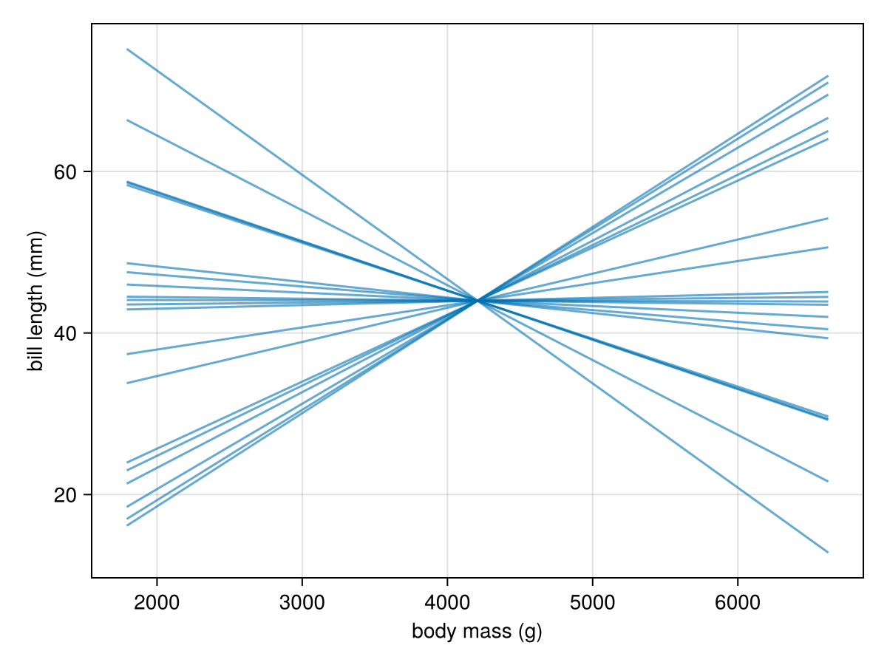
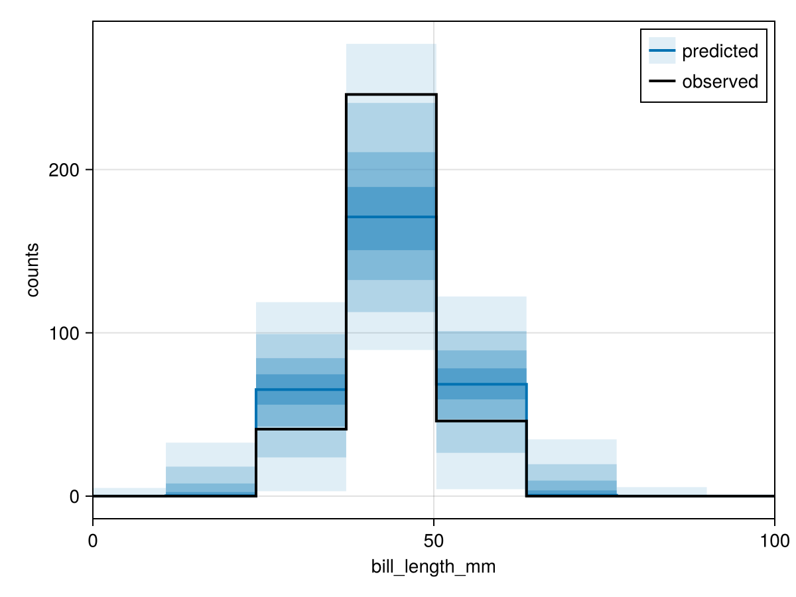
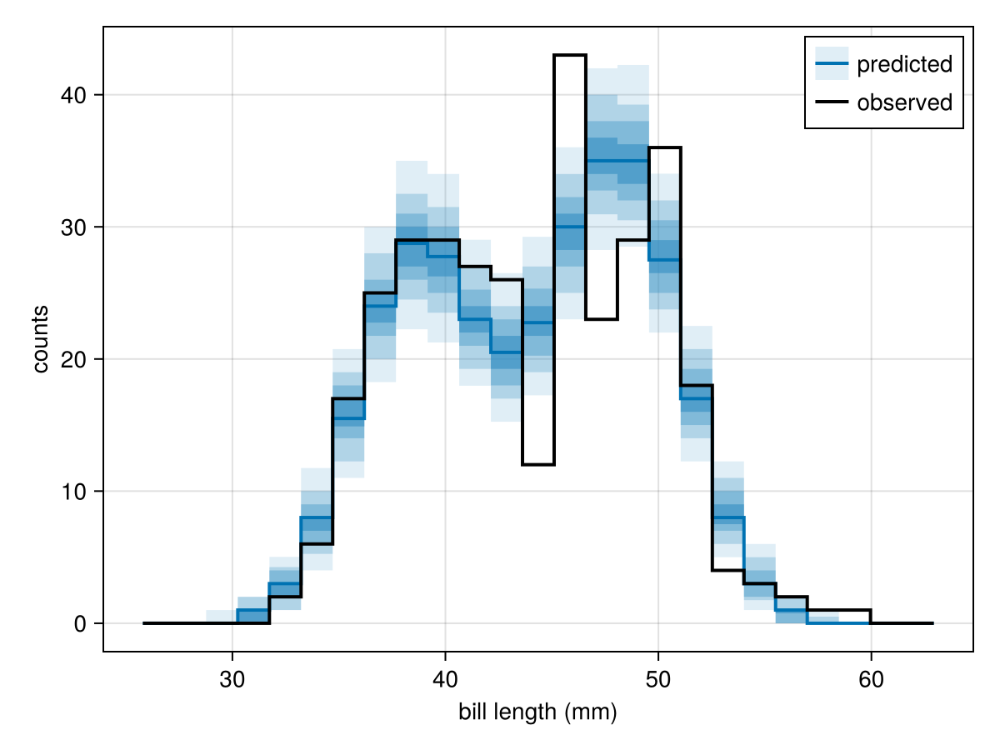
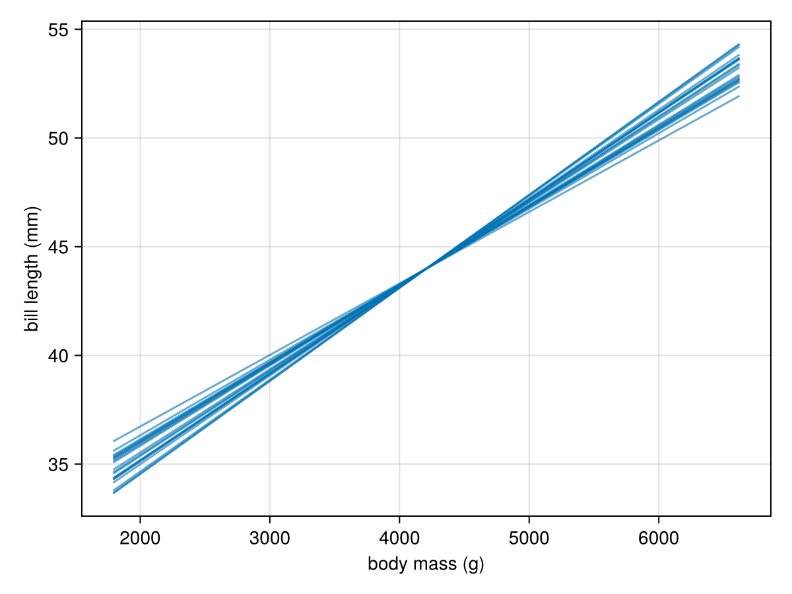

Bayesian workflow
In the worked example below, we demonstrate how Wren and the JuliaBayes ecosystem enable the Bayesian Workflow.
We'll concoct an example with the Palmer penguins dataset. This dataset includes measurements of three different Antarctic penguins species.
We first have to prepare the dataset. We'll z-standardise the variables because it usually improves sampling efficiency and simplifies choosing priors.
using Wren, PalmerPenguins, DataFrames, FlexiChainsusing WrenDists: Normal, Exponentialusing StatsBase: denserank, fit, ZScoreTransform, reconstruct# Load datapenguins = DataFrame(PalmerPenguins.load())# Drop missing values first (this ensures that standardisation doesn't trip over)dropmissing!(penguins)# Fit standardisation transforms so we can unstandardise predictions laterbill_zs = fit(ZScoreTransform, Float64.(penguins.bill_length_mm))mass_zs = fit(ZScoreTransform, Float64.(penguins.body_mass_g))# Tidy up the datastandardize(x) = (x .- mean(x)) ./ std(x)transform!(penguins, names(penguins, Real) .=> standardize => identity)transform!(penguins, :species => denserank => :species_idx)Let's say we're interested in learning if a penguin's bill length increases with body mass, while taking into account that bill lengths between species might differ, too. The model below uses @iid for the per-species intercepts and a @batch loop for the likelihood:
# Define a model for penguin bill length as a function of species and body mass@wren function bill_model(bill_length, species, body_mass) n_species = maximum(species) @iid beta1 ~ Normal(0, 1) size=n_species beta2 ~ Normal(0, 1) sigma ~ Exponential(1) mu = beta1[species] .+ beta2 .* body_mass @batch for i in eachindex(bill_length) bill_length[i] ~ Normal(mu[i], sigma) endendbill_model (generic function with 1 method)Prior predictions
We can now instatiate the Wren model and use it with rand(model) to draw from the prior (see Working with models):
model = bill_model(penguins.bill_length_mm, penguins.species_idx, penguins.body_mass_g)rand(model)VarNamedTuple
├─ beta1 => [-1.18839761377968, -1.7140925221181291, 1.508885379725855]
├─ beta2 => -1.0120506832515008
├─ sigma => 0.6892176425386195
└─ bill_length => PartialArray size=(333,) data::Vector{Float64}
├─ (1,) => -0.9243710643871017
├─ (2,) => -1.128888567841556
│ ⋮ (330 more set indices)
└─ (333,) => -2.050533094242712You may have noticed that we did not use @observe in our model definition. This is because it would prevent bill_length from being included in the prior draw rand(model). The rest of the workflow shown here is compatible with @observe.
Alternatively, we can use prior to create a FlexiChain that contains as many prior draws as we specify, and summarise it with summarystats.
chain_prior = prior(model, 1000, 4; progress=false)summarystats(chain_prior[[@vn(beta1), @vn(beta2), @vn(sigma)]])╭─FlexiSummary (9 statistics) ─────────────────────────────────────────────────╮
│ iter collapsed │
│ chain collapsed │
│ ↓ stat = [mean, std, mcse, ess_bulk, ess_tail, rhat, q5, q50, q95] │
│ │
│ Parameters (5) ── VarName │
│ Float64 beta1[1], beta1[2], beta1[3], beta2, sigma │
│ │
│ Extras (0) │
│ (none) │
│ │
│ Summary │
│ param mean std mcse ess_bulk ess_tail rhat … │
│ beta1[1] -0.0157 0.9995 0.0164 3727.9063 3998.1516 0.9999 … │
│ beta1[2] -0.0128 1.0218 0.0164 3866.7525 3805.7181 1.0002 … │
│ beta1[3] 0.0183 0.9988 0.0155 4153.1396 4087.5757 1.0011 … │
│ beta2 -0.0134 1.0005 0.0158 4036.2126 3954.1807 1.0000 … │
│ sigma 1.0099 1.0321 0.0166 4054.8724 3863.6200 0.9999 … │
╰──────────────────────────────────────────────────────────────────────────────╯While we could technically continue working with the chain, the rand(model) syntax lends itself nicely towards visualising individual samples from the prior distribution.
using CairoMakiecolors = Makie.wong_colors()fig = Figure()ax = Axis(fig[1, 1], xlabel="body mass (g)", ylabel="bill length (mm)")xs_z = -3:0.1:3# Draw 20 prior predictions for the slope of body massfor _ in 1:20 vnt = rand(model) ys_z = vnt[@vn(beta2)] * xs_z ys = reconstruct(bill_zs, ys_z) xs = reconstruct(mass_zs, xs_z) lines!(xs, ys, color=(colors[1], 0.6))endfig
You can read more about working with VarName and VarNamedTuple in the VarNames.jl docs.
We may also want to check if the prior distribution of bill_length looks reasonable, i.e., that it doesn't include impossible values such as negative bill_length. FlexiChains provides helpful functions here – first, we reconstruct the draws on the millimeter scale with transform_values and then visualise the prior predictive distribution with pushforward_hist:
using FlexiChains: transform_valueschain_prior = transform_values(chain_prior, @vn(bill_length) => (v -> reconstruct(bill_zs, v)))observed = reconstruct(bill_zs, penguins.bill_length_mm)FlexiChains.Makie.pushforward_hist( chain_prior, @vn(bill_length); observed=observed, axis=(; xlabel="bill_length_mm", limits=((0, 100), nothing)),)
Conditioning on data
Having had a look at the prior, we're now ready to condition the model on the observed data and sample from the posterior. Wren's default autodiff backend is Enzyme (see Working with Enzyme), so we need to make sure to import that first. Then we condition with | (see condition) and sample with nuts:
import Enzymemodel_cond = model | VarNamedTuple(bill_length=penguins.bill_length_mm)chain_post = nuts(model_cond, 1000, 4; progress=false)summarystats(chain_post)╭─FlexiSummary (9 statistics) ─────────────────────────────────────────────────╮
│ iter collapsed │
│ chain collapsed │
│ ↓ stat = [mean, std, mcse, ess_bulk, ess_tail, rhat, q5, q50, q95] │
│ │
│ Parameters (5) ── VarName │
│ Float64 beta1[1], beta1[2], beta1[3], beta2, sigma │
│ │
│ Extras (9) │
│ Float64 step_size, tree_depth, is_divergent, is_max_depth, │
│ acceptance_rate, log_density, logprior, loglikelihood, logjoint │
│ │
│ Summary │
│ param mean std mcse ess_bulk ess_tail rhat … │
│ beta1[1] -0.6016 0.0445 0.0009 2715.6887 3022.4193 1.0003 … │
│ beta1[2] 1.2062 0.0585 0.0011 2635.8960 2922.6086 1.0001 … │
│ beta1[3] 0.0496 0.0608 0.0013 2136.8831 2790.9368 1.0004 … │
│ beta2 0.5506 0.0418 0.0010 1910.4047 2321.9902 1.0002 … │
│ sigma 0.4436 0.0170 0.0003 3973.5182 2710.5168 1.0004 … │
╰──────────────────────────────────────────────────────────────────────────────╯Normally we would like to check that chains mixed and sampling went well with more diagnostics, such as diagnostic plots plot(chain_post) or checking for divergent transitions sum(chain_post[:is_divergent]) / prod(size(chain_post)), but we'll leave it at mentioning these for this simple model.
Posterior predictions
Towards the end of the Bayesian workflow, we typically want to check if the model approximates the data-generating process reasonably well with a posterior predictive check.
A posterior predictive check uses the fitted parameters and values of the covariates species and body_mass to predict new values of the outcome bill_length. This can be done with either the same covariate values used to fit the model, or with a new set of covariate values. A new set could either represent a hypothetical new group of penguins that we want to predict for, or help us visualise how bill_length changes with body_mass, resulting in a plot similar to the prior slope visualisation above.
We'll begin with the former and use predict to predict for the same covariates we fit the model with. FlexiChains.pushforward_hist then plots histograms for our posterior prediction and overlays the observed data, giving us an opportunity to spot if the two would clearly diverge:
chain_pred = predict(model, chain_post)chain_pred = transform_values(chain_pred, @vn(bill_length) => (v -> reconstruct(bill_zs, v)))FlexiChains.Makie.pushforward_hist( chain_pred, @vn(bill_length); observed=observed, axis=(; xlabel="bill length (mm)"),)
The model seems to capture the distribution of the observed data well!
Now let's see what the model learned about how body_mass relates to bill_length, by drawing single samples from the chain and extracting them with parameters.
fig = Figure()ax = Axis(fig[1, 1], xlabel="body mass (g)", ylabel="bill length (mm)")xs_z = -3:0.1:3# Draw 20 posterior samples of the slope of body massfor _ in 1:20 vnt = parameters(rand(chain_post)) ys_z = vnt[@vn(beta2)] * xs_z ys = reconstruct(bill_zs, ys_z) xs = reconstruct(mass_zs, xs_z) lines!(xs, ys, color=(colors[1], 0.6))endfig
As we may have expected, more penguin means more bill!